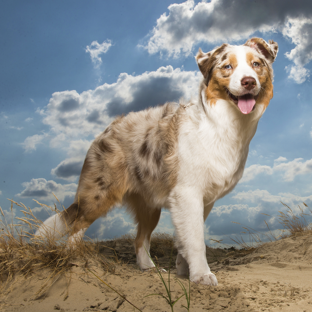

Max

Max is 1 years old. We apdopted him on January 23rd. He is a stunning, friendly dog. Max is good with Kids. Max is looking for a loving home.
Ben

Ben is 1 years old. We apdopted him on May 3rd. He is a strong, gentle giant. Ben is good with Kids. Ben is looking for a loving home.
Jenny

Sally is 6 years old. We apdopted her on June 3rd. She is a gentle, happy dog. Jenny is good with Kids. She is also super calm. Jenny is looking for a loving home.